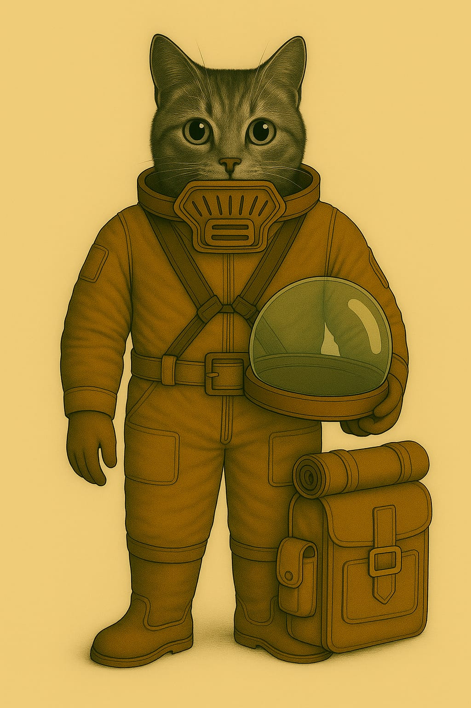
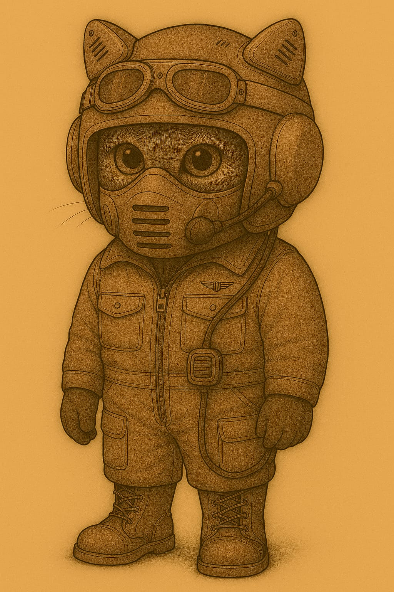

Anzüge
Standard-Feldanzug (Innen- & Unteranzug)
Verwendung: Habitatbetrieb · Appelle · Technikbereiche · Unteranzug für Ausseneinsätze

🧰 Funktionaler Überblick
Der Standard-Feldanzug ist ein einheitlich gefertigtes Bekleidungsstück für den täglichen Einsatz auf dem Mars. Er dient primär als Innenraum-Uniform für alle Aufgaben innerhalb von Habitaten und Stationen – inklusive Verwaltung, Technik, Medizin, Versorgung oder Sicherheit. Gleichzeitig ist er als Unteranzug für längere Ausseneinsätze vorgesehen: Er wird direkt unter einem externen Schutzanzug (z. B. Raumanzug, Exo-Einsatzsystem) getragen und bietet dafür ideale Kompatibilität.
🧥 Oberteil – Uniformjacke
- Farbe: Dunkel-terrakottafarbener Ton – erkennbar, traditionsbewusst, schmutzunempfindlich.
- Material: Hochreissfestes, atmungsaktives Mischgewebe mit Staubschutzbeschichtung und guter Thermoisolierung.
- Ausstattung:
- Front: durchgehende Knopfleiste mit flachen Druckknöpfen (auch unter Exoanzügen nicht störend).
- Kragen: klassisch, flachliegend – vorbereitet für Kragenfilter, Innenhelmeinlass oder Kommunikationsaufsatz.
- Taschen: Zwei Brusttaschen mit Patten – flach gehalten, um unter Anzügen nicht aufzutragen.
- Schultern: mit interner Verstärkung zur Druckverteilung bei Tragesystemen oder Rucksackmodulen.
👖 Unterteil – Hose
- Schnitt: Körpernah, aber bewegungsfreundlich. Beine verjüngt, Abschluss für Stiefeloptimierung.
- Details:
- Seitliche Eingrifftaschen.
- Verstärkte Knie- und Gesässbereiche (besonders nützlich beim Kriechen oder langen Tragen).
- Gürtelbereich: kompatibel mit Innenriemen oder Versorgungsverkabelung.
- Anwendung: Die Hose kann dauerhaft getragen und einfach in einen Aussenschutz integriert werden (kein Umziehen notwendig).
🥾 Stiefel
- Modell: Mars-Innenstiefel, robust und komfortabel.
- Funktion: Ausgelegt für Alltag und kurzzeitigen Ausseneinsatz.
- Merkmale:
- Weicher Schaftabschluss zum Andocken von Aussengamaschen oder Anzugabdichtungen.
- Rutschhemmend, hitzebeständig.
- Schnellschnürung für schnelles An- und Ausziehen in Luftschleusen.
😷 Leichtatmer (L-F1-Serie)
- Typ: Halbmaske mit Basisstaubfilter.
- Funktion: Schutz bei reduzierter Filterleistung im Inneren, leichten Leckagen oder auf kurzen Aussenwegen.
- Design: Elastische Bänder, flaches Filterprofil, kompatibel mit der leichten Schutzkappe oder dem Pilotenhelm-System.
- Besonderheit: Kann im Aussenbereich weitergetragen werden, wenn der externe Helm abgenommen wird (z. B. zur Wartung oder Erholung).
🔧 Modularität & Schichtung
- Innentragung: Unter Exo-, Raum- oder Versorgungsanzügen.
- Schichtkonzept:
- Unterwäsche (technisch oder leicht isolierend)
- Feldanzug (dieses Modell)
- Aussensystem (Anzug, Versorgung, Schutz)
- Der Feldanzug ist so gefertigt, dass er weder scheuert noch staut, auch bei stundenlangem Tragen unter Druckanzügen. Schweiss wird nach aussen geleitet, Druckstellen werden durch den Schnitt vermieden. Die Oberfläche reduziert Reibung zu Aussenanzügen.
Soldaten-Anzug mit Kommunikation-Einheit
Kopfhörer aussen am Helm und ein Mikrofon das magnetisch von aussen am Filter befestigt wird.


Lazarett-Pilot (LP)
✈ Piloten-Kommunikationsanzug „Typ A-3K“
Verwendung: Flugdienst · Luftgestützte Transporte · Kontrollflüge
🧰 Allgemeines
Der „Typ A-3K“ ist ein modifizierter Einsatzanzug für Pilotinnen und Piloten, speziell angepasst für den Einsatz in Verbindung mit einem fest verbauten Bordfunkgerät. Die integrierte Helmfunktechnik dient ausschliesslich der Sprachübertragung über das interne Kommunikationssystem des Luftfahrzeugs. Der Anzug ermöglicht zuverlässige Kommunikation, bietet Schutz, Komfort sowie taktische Funktionalität bei gleichzeitigem repräsentativem Erscheinungsbild.
👕 Anzug (Einteiler mit Funkintegration)
- Aufbau: Einteiliger Anzug mit Reissverschlussfront, angesetztem Kragen und verstärkten Nähten
- Material: Thermoausgleichendes Marsgewebe (Mars-PolyFas) mit Staubschutzbeschichtung, isolierend gegen Temperaturschwankungen in Shuttlekabinen
- Details:
- Zwei aufgesetzte Brusttaschen mit Knopfpatten
- Oberschenkeltaschen mit Reissverschluss (rechts und links)
- Linker Oberarm mit aufgesetzter Tasche
- Flugdienstabzeichen mittig auf der Brust, leicht versetzt zur linken Seite
- Farbe: Einheitliche Dienstfarbe in rostbraun
🎧 Kommunikationssystem – modifizierter IN-Helm für felinische Nutzer
- Helm: Der Funkhelm basiert konstruktiv auf der Interstellaren Norm (IN) für Luftfahrthelmkommunikation, wurde jedoch anatomisch speziell für Felinen angepasst. Er ist ausschliesslich für den Betrieb in Kombination mit Bord-Funkgeräten vorgesehen und nicht eigenständig sendefähig.
- Anpassung für Felinen: Da sich die Ohren bei Felinen nicht seitlich, sondern oben am Schädel befinden, wurde die Lautsprechertechnik entsprechend angepasst:
- Die Lautsprechereinheiten sitzen in den erhöhten Ohrmuschelbereichen des Helms, in direkter Nähe zum Gehör
- Diese Positionierung erlaubt eine natürliche Schallwahrnehmung
- Die Lautsprecher sind von aussen wartbar und austauschbar
- Seitliche Polster: dienen ausschliesslich der Dämpfung, Stabilisierung und Mikrofonverankerung – keine Technik integriert
- Mikrofon:
- Rechtsseitig montiert, flexibel schwenkbar
- Optimiert für Sprachaufnahme bei geringer Helmöffnung
- Signalführung direkt zur Bordelektronik
😷 Atemschutz – Leichtatmer
- Filtereinsätze für Staubpartikel und dünne Atmosphäre
- Dreifachbelüftung an der Frontmaske
- Dichtsitz über Kragen und unter Helmkante
🥾 Stiefel
- Typ: Piloten-Stiefel, optimiert für Flugbetrieb
- Schnürsystem, antistatische Sohle, staubabweisender Überzug
- Sicherer Halt in Steuerpedalen, auch unter Marsbedingungen
📡 Einsatzprofil
Der A-3K wird getragen bei:
- Start- und Landeoperationen innerhalb der Kolonie
- Flugkontrollen zwischen Modulen
- Koordinierten Versorgungsflügen
- Kurzen Ausseneinsätzen unter Normaldruckbedingungen mit Leichtatmer
🛠 Spezialmerkmale
- Kommunikation ausschliesslich über angebundene Bordfunkgeräte
- Ergonomisch angepasst an felinische Anatomie
- Erhöhte Erkenn- und Ansprechbarkeit durch Helmform, Mikrofonführung und sichtbare Dienstabzeichen
- Kompatibel mit Pilotensitzen, Gurtsystemen und atmosphärisch abgeschirmten Cockpits
Kadetten-Anzug


Kadetten-Ausseneinsatzanzug „Typ K-1R“
Verwendung: Ausseneinsätze · Geländeübungen · Ausbildungsexpeditionen auf der Marsoberfläche
🧰 Allgemeines
Der Kadettenanzug „Typ K-1R“ ist ein leichter Ausseneinsatzanzug für Nachwuchspersonal und Schulungseinsätze ausserhalb der Stationen. Er schützt zuverlässig vor Staub, UV-Strahlung, Kälte und dünner Atmosphäre – bei hoher Bewegungsfreiheit und robuster Konstruktion. Der Anzug ist für angeleitete Expeditionen unter Normaldruckbedingungen konzipiert und entspricht den kolonialen Sicherheitsstandards für Kadettenausbildung.
👕 Anzug (Ganzkörper-System)
- Aufbau: Einteiliger, versiegelter Ausseneinsatzanzug mit zentralem Reissverschluss, Isolierkern und Kreuzgurtsystem
- Material: Dreilagige Mars-Polyfaser mit Staubschutzoberfläche und temperaturregulierender Innenstruktur
- Tragesystem:
- Brustgurtführung zur Helmbefestigung
- Breiter Gürtel mit Nottrennverschluss
- Befestigungszonen:
- Keine Taschen
- Stattdessen Superhaft-Klettzonen an Oberschenkeln, Unterarmen und Gürtelbereich
- Zur Aufnahme von externen Ausrüstungsmodulen, wie Werkzeughalterungen, Lichtquellen oder Kartenträgern
🥾 Stiefel
- Typ: Halbhohe Aussendienststiefel
- Versiegelt, isoliert und antistatisch
- Flexgelenke zur Unterstützung langer Märsche
- Staubresistent und trittsicher auf losem Gelände
Atemschutz – Standardfiltersystem
- System:
- Kein Leichtatmer-Modul
- Standardisierter Frontanschluss für Filtrationskassetten
- Kompatibel mit Kolonie-Kassetten Typ S (Feinstaub, Gas, Partikel)
- Sichtbare Filteraufnahme mit modularer Einschuböffnung
- Wartung:
- Kassette werkzeuglos wechselbar
- Einsatzdauer je nach Belastung 4–8 Stunden
Helm (abnehmbar)
- Typ: Kuppelhelm mit mechanischer Verriegelung
- Schutz gegen Partikel, Lichtreflexion und Unterdruck
- Aufsetzbar über Bajonettverschluss
- Kein Funk integriert – nur passive Helmform
🎒 Zusätzliche Ausrüstung
- Rückensystem:
- Leichter Ausrüstungsbehälter mit Rollmatte
- Modulaufnahme für Trinksystem, Nordweiser, Ersatzkassette
- Gurtmontage mit Fixierungspunkten
📡 Einsatzprofil
- Zielgruppe: Kadetten in technischer oder operativer Ausbildung
- Verwendung:
- Geführte Expeditionen auf der Marsoberfläche
- Ausbildung im realen Aussenumfeld (z. B. Sensorwartung, Topografie, Navigation)
- Wartungsbegleitung, Orientierungsübungen
- Einschränkungen:
- Nicht vakuumdicht
- Kein integrierter Funk
- Nur mit zugelassener Filterkassette verwendbar
- Einsatz nur unter Aufsicht und mit Rückkehrfenster
📡 Kommunikationssystem – Externes Kadetten-Funkmodul „K-Radio/01“
Verwendungszweck: Gruppenkommunikation bei Ausbildungsexpeditionen · Verbindung zur Aufsicht
🔧 Technische Umsetzung
Im Kadettenbetrieb wird aus Kostengründen auf integrierte Helmfunktechnik verzichtet. Stattdessen kommt das einfache Funkmodul „K-Radio/01“ zum Einsatz.

- Anbringung: Das Funkmodul wird per Klett- oder Cliphalterung direkt am Anzug befestigt, meist im Brustbereich.
- Verbindung:
- Es ist über ein Kabel mit Stecker mit der Funkkiste FK-2M verbunden, die als zentrales Gruppenfunkgerät dient und von zwei Kadetten gemeinsam getragen werden muss.
- In seltenen Ausnahmefällen wird stattdessen ein kompaktes Kleinfunksystem der regulären Truppen eingesetzt. Diese Geräte sind hochwertiger, aber im Kadettendienst nicht vorgesehen.
- Lautsprecher:
- Aussen am Helm montiert
- Überträgt Sprache indirekt über die Luft im Helm
- Führt zu dumpfer oder verzerrter Wiedergabe
- Mikrofon:
- Direkt am Filtermodul befestigt
- Sprache wird oft gedämpft durch Atemgeräusche und Filterrauschen
📉 Praktische Einschränkungen
Die Kombination aus Aussenlautsprecher, Filtermikrofon und grossem Helmvolumen führt häufig zu:
- undeutlicher Kommunikation
- verzögerter Reaktion
- Missverständnissen bei Anweisungen
Die Ausbildung setzt daher stark auf visuelle Signale, Blickkontakt und standardisierte Gesten.
Kadetten-Anzug, Pilot-Assistenz

Kadett Standard

Rüstungen
Vollrüstung Militär

Arbeitsanzüge
[in Arbeit]